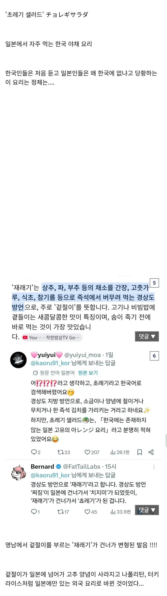

경기권 식당 가서 재래기 주세요~ 하면 ????????한다 ㅋㅋㅋㅋㅋㅋㅋㅋㅋㅋㅋㅋ 표정 재밌음
서울 갈 때마다 자주 가는 고깃집에선 알아 듣던데.... 근데 생각해 보니 사장님도 경상도 사람이긴 했네.
부침개보다 지지미가 일본에서 발음하기 쉬워서 많이 쓰던데
은근 경상도쪽 어휘가 많이 쓰이는듯
아 상추겉절이구나 맛있지
어무이 배추가 고기보다 맛있네요~
일본 야끼니쿠집 가니깐 메뉴에 있던데 저거였구나...
보면 경상도 사투리가 일본에 넘어가서 명칭이 된게 꽤 있는듯 ㅋㅋㅋㅋ
그 찌지미 가 넘어가서 치지미 가 되었지ㅋㅋ
경상도가 일본말 넘어온것도 많고 일본에 사투리 넘어간것도 많고 웃긴동네임
웃긴 건 또 뭐야
원래 지방 중에선 경상도가 일본이랑 교류가 많음.
파절이=파저래기=쵸레기
그러다 쓰레기 되겠다
고기집을 가야있지
식당가면 저 소스에 양파 상추 파 스까버리는데 ㅋㅋㅋㅋ
재래기 있으면 고기가 무한으로 들어감
쵸레기가 뭐지? -> 재래기가 뭐지?
파재래기 고기먹으면 한 두번 리필해야됨
재래기가 가게마다 다른데 고추양념 안 들어간 곳도 많음. 그냥 간장식초참기름 양념에 버부려나가는 느낌.
요즘 고기집 상추 재래기 없어서 너무 슬프다
ㅋㅋ 초록인줄 알앆는데 재래기네
내가 고기집 파재래기 킬러지
양념갈비 ㅡ 상추재래기
삼겹살ㅡ파지래기
상추겉절이네..
다른 지역엔 없구나 저거 재래기라고 상추랑 파 넣은 겉절이야 경상도 고깃집 가면 무조건 나옴 상추쌈은 안 싸 먹을지언정 저건 오지게 먹어줘야됨
아니 있어. 이름이 다르다는 거야. 대부분은 윗댓들처럼 상추겉절이라고하지.
서울촌놈인데 오늘 첨 들어본 단어임...